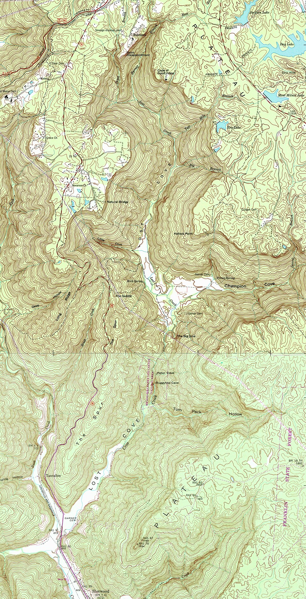
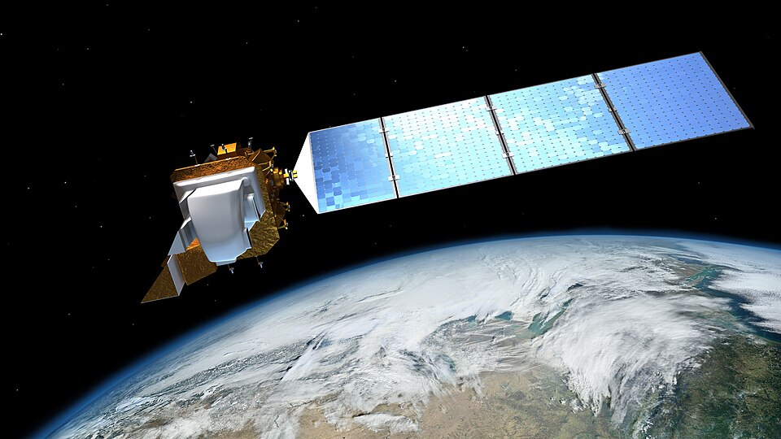
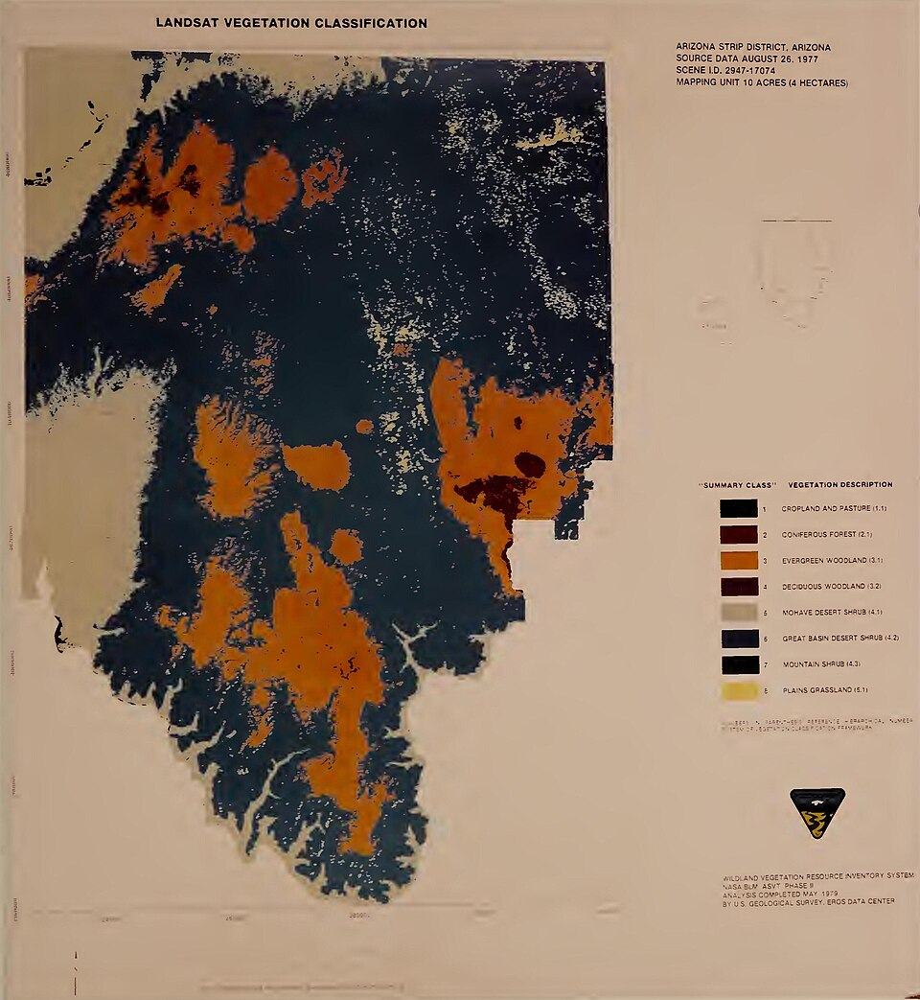
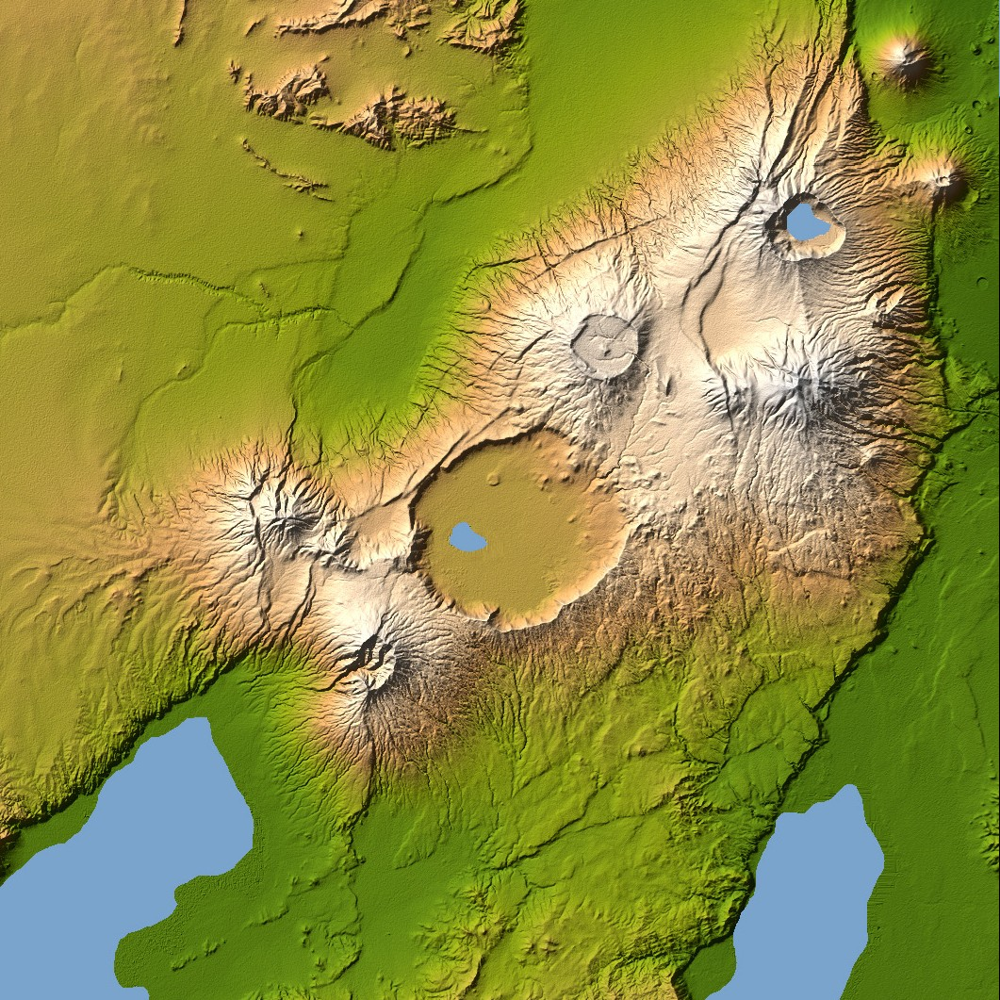
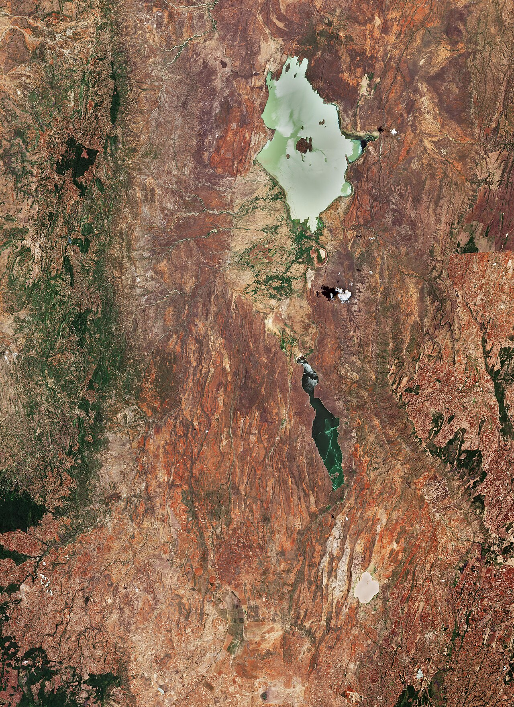
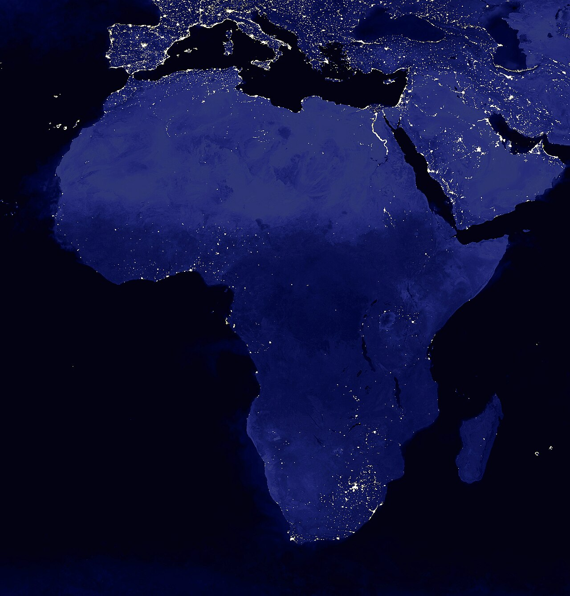
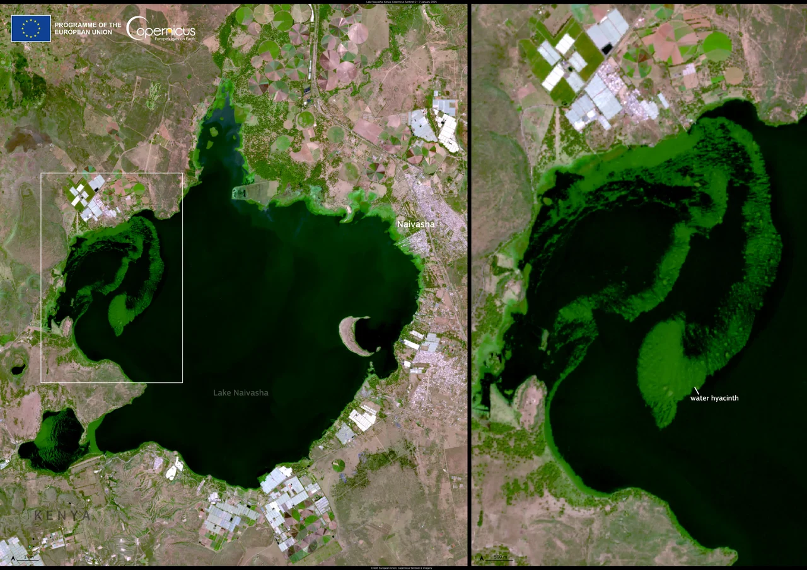
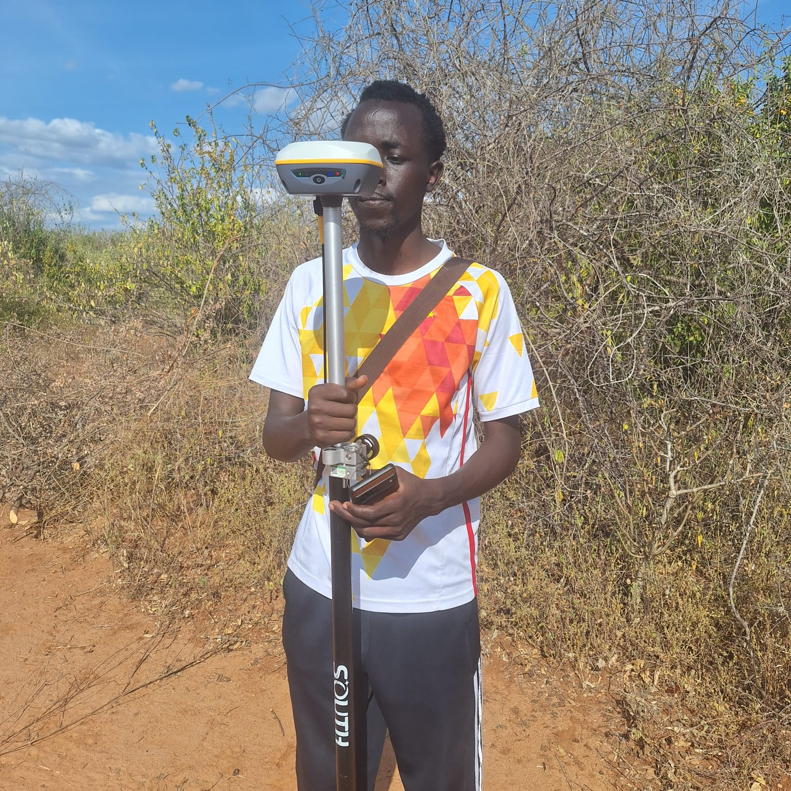

Geospatial Engineer | Surveying, GIS & AI
From precise field surveys to satellite imagery, I turn spatial data into decisions that matter.
- Land Surveying
- GIS
- Remote Sensing
- GeoAI
First Class Honours, BSc Geospatial Engineering, University of Nairobi
About me
I am a Geospatial Engineering graduate from the University of Nairobi. My work sits where GIS, remote sensing and AI meet: using Sentinel-2 imagery, deep learning and Python to verify deforestation free coffee supply chains, map landslide risk and detect illegal gold mining.
I turn messy spatial data into clear answers people can act on, and I enjoy explaining the findings to non technical audiences.
What I do


Images: USGS, NASA, USGS/BLM (public domain)
Education
-
BSc Geospatial Engineering, First Class Honours
University of Nairobi
2021 to 2026
-
KCSE, Mean Grade A minus
Nairobi School
2017 to 2020
Certifications
-
Esri MOOCs: Advanced GIS, Spatial Analysis, AI Ready Data Management
Esri
2026
-
Metadata Essentials for AI Ready GIS
Esri East Africa Seminar
26 Mar 2025
Tools I work with
Skills
Contents
Switch a layer on to see the tools behind it.

Layer 01Legend8 tools
GIS and Mapping
- ArcGIS Pro
- ArcMap
- ArcGIS Online
- ArcGIS Dashboards
- StoryMaps
- QGIS
- Geodatabases
- Digitizing
Source: NASA/JPL SRTM, public domain

Layer 02Legend7 tools
Remote Sensing
- Sentinel-2
- NDVI
- BSI
- MNDWI
- NBR
- Land Cover Classification
- Change Detection
Source: ESA, Copernicus Sentinel-2 data

Layer 03Legend6 tools
AI and Machine Learning
- U-Net
- Random Forest
- LLM Workflows
- Prompt Design
- RLHF Concepts
- Data Annotation
Source: NASA GSFC, public domain

Layer 04Legend7 tools
Programming and Data
- Python
- ArcPy
- GeoPandas
- Pandas
- NumPy
- SQL
- Microsoft Office

Layer 05Legend4 tools
Survey and CAD
- Total Station
- RTK GPS
- Automatic Level
- AutoCAD
Source: BLM Utah, public domain
Legend5 tools
Professional
- Problem Solving
- Stakeholder Communication
- Team Coordination
- Technical Reporting
- Attention to Detail
Source: BLM Utah, public domain
Where I've delivered
Experience
-
GIS Intern
Esri Eastern Africa
- Jul 2026 to Sep 2026
- Internship
Built an AI detection workflow for illegal artisanal gold mining in Migori County, using Sentinel-2 imagery, a U-Net model, ArcGIS Pro and Python.
- Sentinel-2
- U-Net
- Deep Learning
- ArcGIS Pro
- Python
-
GIS Intern
Directorate of Resource Surveys and Remote Sensing (DRSRS)
- Jul 2025 to Sep 2025
- Internship
Processed and validated Sentinel-2 imagery into land use maps for EU Deforestation Regulation (EUDR) coffee compliance across East Africa, and presented findings to senior analysts and clients.
- EUDR
- Remote Sensing
- Digitizing
- Geodatabase
- Data Quality
-
Leadership and Community
GESA and Engineering Student Association
- 2020 to 2024
- Kenya
Coordinated the GIS Day and Sports Day segments (2023), joined a tree planting initiative (2024), and organised outreach to children's homes and food distribution drives.
- Leadership
- Event Coordination
- Community Service
Mapping for impact
Projects
Satellite imagery, spatial analysis and fieldwork, turned into maps people act on.
GeoAI, Esri Eastern Africa, 2026
AI Detection of Illegal Gold Mining
A deep learning workflow that flags artisanal mining activity from satellite imagery.
View details
Classified mining areas from Sentinel-2 imagery with a U-Net model, using ArcGIS Pro and Python for data processing and mapping.
- Sentinel-2
- U-Net
- ArcGIS Pro
- Python
Remote Sensing, DRSRS, 2025
EUDR Coffee Mapping
Mapping coffee regions to verify deforestation free supply chains for EU compliance.
View details
Processed Sentinel-2 imagery, digitized coffee areas, ran spatial analysis and corrected dataset inconsistencies for regulatory reporting.
- Sentinel-2
- ArcGIS Pro
- Digitizing
- Geodatabases
Research, University of Nairobi, 2025
Landslide Susceptibility Mapping
Risk maps that support county disaster preparedness and land use planning.
View details
Combined topographic, geological, rainfall and land use data to identify high risk communities and present them as clear, actionable maps.
- ArcGIS Pro
- QGIS
- Spatial Analysis
- Python
Surveying, University of Nairobi, 2024
Cadastral and Topographic Surveying
Field surveys that collect precise spatial data.
View details
Operated a total station, RTK GPS and automatic level, then processed the results in AutoCAD and ArcGIS.
- Total Station
- RTK GPS
- AutoCAD
- ArcGIS
Get in touch
Let's Connect
Open to roles in GIS, remote sensing, AI and data. Have a role, a project, or just want to talk maps? Send me a message.
-
Location
Nairobi, Kenya
-
LinkedIn
donald-kimeli